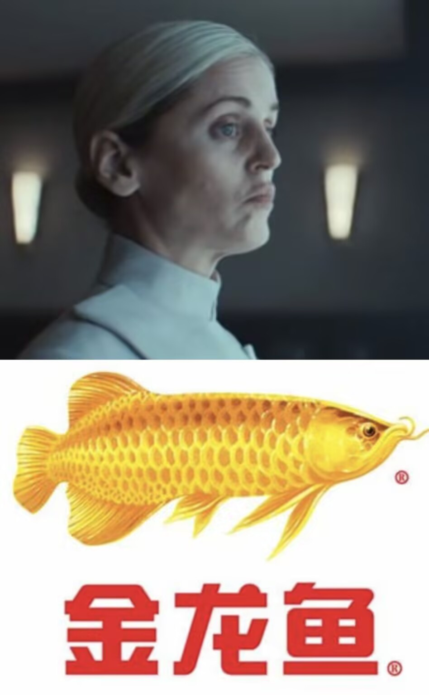

《安多 第二季》剧评
最近安多第二季上线，写写观感顺便说说前段时间看的剧。
安多
先说安多。因为是一集一集看的，就挑点有意思的写写。
第一集
先是上来就是一个看着让人很难不往zzzq上面想的女反抗军（不知道算不算得上反抗军，一下词穷了），不过考虑到其背景是平凡地勤出身，也可以理解。
后面好几条线切换，印象最深刻的是这个：

就是说，鱼人也能进国安局了吗？
其他整体节奏还是偏慢的，感觉像第一季的开头那样，不过还是挺吸引人的，虽然写这个的时候我还没看第二集（倒是把爱情公寓第一季看完了🤓）。
其他
额，我发现不能按照每集来写，因为一口气把剩下的全看完了。😳
先说结论：这是星战最高光的剧集，这部剧证明了星战的无限活力，同时也证明了迪士尼还是有活人的。
作为历史第一次IMDB连续五集9.5以上的剧集，安多可以说是这几年最强的美剧之一了。
演员演技相当不错，特别那个金龙鱼。
四年的跨度无缝衔接侠盗一号的开头，侠盗一号又无缝衔接新希望，我都不敢想一口气看完会有多爽。
众生相
义军建立在希望之上，而希望则是承载在每一个反抗者身上。
主角们自然是令人印象深刻的——安多，卢森，南大——但棋盘上的每个棋子都是至关重要：克莱亚，辛达，朗尼等等。
自然需要有人去抛头露面，如南大般去号召人们奋起反抗；但像朗尼杨格这样在帝国间谍多年最后死于卢森手下的抗压怪也是必不可少的。
“帝国是从黑暗中滋生的瘟疫”“反抗的战线无处不在”“我到处都有朋友”“真相的死亡就是邪恶的最终胜利”
没有了the Chosen One，剩下的只有Everyone。
一边是正在崛起的义军，而另一边则是强大黑暗的帝国。
这部剧里并没有把义军与帝国的矛盾集中到皇帝和维达以及他们手下强大的军队上，而是放在了ISB这样结构严密的机构和金龙鱼那样高效缜密的官僚上。
如我三年前在《安多》不短的评中说的，“星星之火”，放到这部剧中来说挺合适的。这部剧让星战这系列“太空歌剧”带上了更多的现实主义的味道，它才是我心目中的《义军崛起》。
我的评分：⭐⭐⭐⭐⭐（5/5）
这是真神了。
下面是这段时间看的一些其他的星战的剧。
骨干小队
对于一部儿童片来说，还算合格，从小孩的逻辑来说很多地方是讲的通顺的。但是有点太过家家了，而且我不是小登了已经🤔。
给分3.5/5。
异等小队第二季
除了最后几集，前面真的无聊。
给分4/5。
异等小队第三季
不错不错。回归文姐是真帅吧，贝恩是真帅吧，老头Hunter也挺帅吧。
给分4.5/5。
侍者
真屎。（这其实是去年看的了）
给分1.5/5。
黑市传说
前三集小绝地糖完了，带娃带娃带牛魔的娃。
后三集还行，整体观感算不上很好。
情节好多莫名其妙的。
不过文姐是真帅吧，贝恩是真帅吧。
看在文姐和贝恩的面子上给分3.5/5。